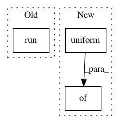

4f14cb629462c9e685ea92a961a80a8c5dcda83a,object_detection/meta_architectures/ssd_meta_arch_test.py,SsdMetaArchTest,test_predict_results_have_correct_keys_and_shapes,#SsdMetaArchTest#,119
Before Change
init_op = tf.global_variables_initializer()
with self.test_session() as sess:
sess.run(init_op)
prediction_out = sess.run(prediction_dict)
self.assertAllEqual(prediction_out["box_encodings"].shape,
expected_box_encodings_shape_out)
self.assertAllEqual(
prediction_out["class_predictions_with_background"].shape,
After Change
with self.test_session(graph=tf_graph) as sess:
sess.run(init_op)
prediction_out = sess.run(prediction_dict,
feed_dict={
preprocessed_input_placeholder:
np.random.uniform(
size=(batch_size, 2, 2, 3))})
self.assertAllEqual(prediction_out["box_encodings"].shape,
expected_box_encodings_shape_out)
self.assertAllEqual(
In pattern: SUPERPATTERN
Frequency: 3
Non-data size: 3
Instances
Project Name: tensorflow/models
Commit Name: 4f14cb629462c9e685ea92a961a80a8c5dcda83a
Time: 2017-07-18
Author: derekjchow@gmail.com
File Name: object_detection/meta_architectures/ssd_meta_arch_test.py
Class Name: SsdMetaArchTest
Method Name: test_predict_results_have_correct_keys_and_shapes
Project Name: ray-project/ray
Commit Name: 088f8ebb69e21c7759af44c6d207a266f4a5d175
Time: 2020-09-07
Author: krfricke@users.noreply.github.com
File Name: python/ray/tune/examples/skopt_example.py
Class Name:
Method Name:
Project Name: tensorflow/models
Commit Name: 4f14cb629462c9e685ea92a961a80a8c5dcda83a
Time: 2017-07-18
Author: derekjchow@gmail.com
File Name: object_detection/meta_architectures/ssd_meta_arch_test.py
Class Name: SsdMetaArchTest
Method Name: test_postprocess_results_are_correct